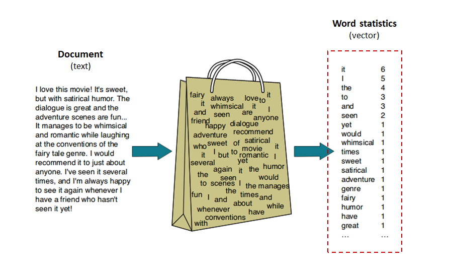

Bag-of-Words (BoW) encoding Upon Optical Character Recognition (OCR), documents can be encoded and classified in BoW.  (Source: https://koushik1102.medium.com/nlp-bag-of-words-and-tf-idf-explained-fd1f49dce7c4)
Highly Interpretabile Textual Models Word statistics For example, in validating "Credential" documents, positive and negative indicating vocabulary can easily be identified.